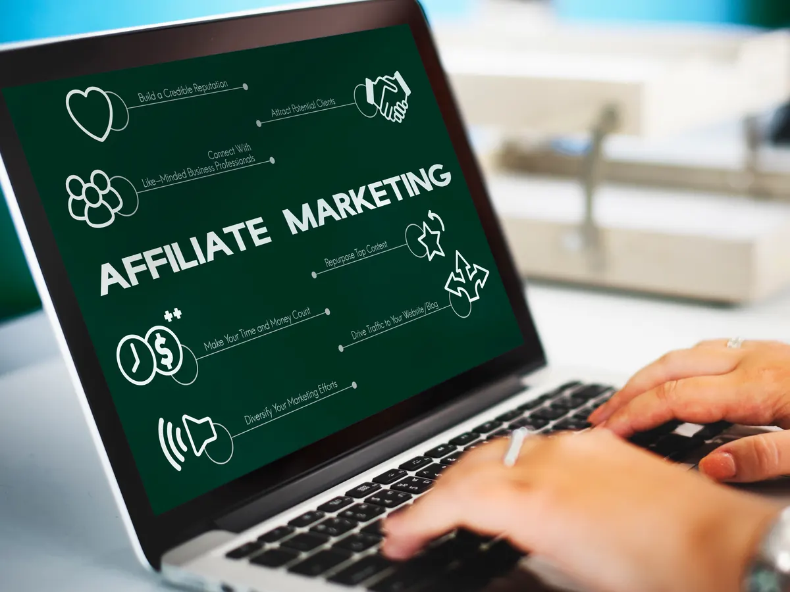

O marketing de afiliados tem crescido rapidamente como uma estratégia eficaz para gerar vendas, aumentar a visibilidade e expandir a base de clientes de empresas dos mais diversos setores. Neste modelo, afiliados promovem produtos ou serviços em troca de comissões por vendas ou ações específicas realizadas através de seus links personalizados.
O Que É Marketing de Afiliados?
Marketing de afiliados é uma estratégia na qual indivíduos ou empresas (afiliados) divulgam produtos ou serviços de terceiros (anunciantes) e recebem uma comissão por cada venda ou ação realizada através da sua indicação. Esse método beneficia ambas as partes: anunciantes ampliam seu alcance e afiliados obtêm receitas sem precisar criar produtos próprios.
Como Funciona o Marketing de Afiliados
- Inscrição em Programas de Afiliados: Os interessados cadastram-se em plataformas como Hotmart, Amazon Associates, Rakuten Advertising, entre outras.
- Recebimento de Links Únicos: Cada afiliado recebe um link exclusivo que rastreia as vendas originadas por suas recomendações.
- Promoção dos Produtos: Afiliados utilizam seus canais, como blogs, redes sociais e e-mail marketing, para divulgar os produtos.
- Acompanhamento e Comissão: As plataformas rastreiam as vendas e pagam comissões ao afiliado conforme o combinado.
Benefícios do Marketing de Afiliados
- Baixo Risco e Custo Reduzido: Empresas só pagam por resultados concretos (vendas ou ações).
- Alcance Ampliado: Afiliados podem acessar públicos diversos, aumentando a exposição da marca.
- Aumento das Vendas: Mais canais promovendo os produtos significam mais oportunidades de venda.
- Desempenho Mensurável: O sistema de rastreamento permite uma análise precisa do retorno sobre investimento.
Técnicas e Estratégias para Implementação
- Escolha dos Afiliados: Selecione afiliados com audiências alinhadas ao seu público-alvo.
- Oferta de Materiais Promocionais: Disponibilize banners, textos promocionais, e-mails pré-escritos e outros materiais que facilitem o trabalho dos afiliados.
- Incentivos Competitivos: Estabeleça comissões atrativas e bonificações por desempenho.
- Comunicação Regular: Mantenha contato constante com seus afiliados, fornecendo suporte e incentivando suas iniciativas.
Melhores Práticas no Marketing de Afiliados
- Transparência: Seja claro sobre as comissões e políticas desde o início.
- Rastreamento Eficiente: Utilize plataformas confiáveis para garantir que todas as vendas sejam devidamente creditadas.
- Avaliação Contínua: Monitore o desempenho dos afiliados e faça ajustes conforme necessário.
Conclusão
Implementar um programa de marketing de afiliados pode impulsionar significativamente as vendas e a visibilidade da sua marca. Ao seguir práticas recomendadas e investir em uma comunicação eficaz com os afiliados, empresas podem alcançar resultados expressivos, com investimentos baixos e riscos reduzidos. Este modelo não apenas fortalece o desempenho comercial, mas também constrói relações duradouras com parceiros estratégicos.
Quer resultados como esses no seu negócio?
Receba um diagnóstico estratégico gratuito e descubra como tratar o seu marketing como investimento.
Falar com a BAM →